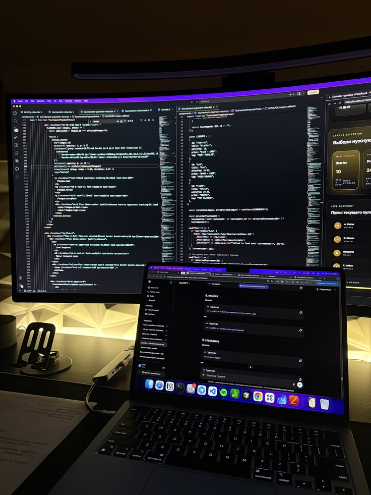

Étudiant en informatique • Disponible pour apprendre & collaborer
Bonjour, je suis
Andry Fitiavana
Etudiant en informatique / Développeur en devenir
Je transforme mes idées en projets numériques, et je continue d'apprendre chaque jour pour créer des expériences utiles, modernes et soignées.

Focus actuel
Développement web, programmation et bases de données
A PROPOS
Mon parcours
Curieux, motivé et en constante progression, je construis mon profil à travers l'apprentissage et la pratique.

Un passionné de technologie
Je suis étudiant en informatique, passionné par le développement, la technologie et la création de projets numériques.
J'apprends progressivement différentes technologies afin de développer mes compétences et de concrétiser mes idées à travers des projets concrets.
Mon objectif est de devenir un développeur compétent et de participer à la création de projets innovants, utiles et bien pensés.
- Parcours : études en informatique avec une approche pratique.
- Approche : curiosité, rigueur et amélioration continue.
- Ambition : évoluer vers un profil de développeur polyvalent.
Etudes
Informatique
Objectif
Devenir développeur
Passions
Technologie, jeux vidéo, animé et basketball
MES COMPETENCES
Mes domaines
Les technologies et domaines que j'explore et que je continue d'approfondir au fil de mes projets.
Programmation
C, Java, C#, PHP
Bases solides en cours de renforcementDéveloppement web
HTML, CSS, JavaScript
Création d'interfaces modernesBases de données
MySQL, SQL
Modélisation et requêtes essentiellesDesign & PAO
Figma, Photoshop
Sens du visuel et de la présentationSystèmes & réseaux
Linux, Windows, réseaux
Compréhension de l'environnement techniqueOutils
Git, VS Code
Workflow de développement quotidienCONTACT
Restons en contact
Une idée, un projet ou simplement envie d'échanger ?
Discutons de vos idées
Je serai ravi de découvrir de nouvelles opportunités, d'apprendre à travers de nouveaux défis et de discuter de projets numériques.
Collaboration
Ouvert aux projets étudiants, aux idées créatives et aux expériences d'apprentissage.
Échange
Intéressé par le développement, la technologie et la création de solutions utiles.